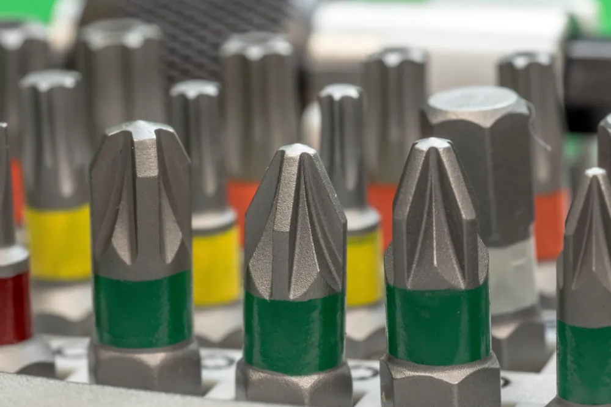

Portail ou porte de garage motorisé : entretien et cellules

Des cellules sales ou mal alignées bloquent le portail, des rails encrassés font forcer le moteur. Deux entretiens par an évitent la plupart des pannes.
Mode accompagnement : une étape à la fois, en grand, avec lecture à voix haute et minuteurs.
Les étapes
Coupez l'alimentation du moteur avant de travailler sur les parties mobiles. Ne mettez jamais les mains près d'un portail en mouvement.
-
Nettoyer les cellules
Essuyez les deux cellules photoélectriques au chiffon microfibre et vérifiez qu'elles sont bien face à face, sans végétation devant.
-
Tester la sécurité
Portail en fermeture, passez un objet entre les cellules : il doit s'arrêter ou repartir en arrière.
-
Nettoyer rails et crémaillère
Portail coulissant : balayez le rail et retirez gravillons et feuilles. Porte de garage : dépoussiérez les rails.
-
Lubrifier les articulations
Portail battant : lubrifiez gonds, charnières et bras. Évitez les graisses épaisses sur les rails, elles retiennent la poussière.
-
Tailler et vérifier
Coupez la végétation qui gêne le mouvement, vérifiez le boîtier de commande (propre, sans insectes) et la pile de la télécommande.
Astuce : Idéalement après l'été et avant l'hiver.
Dernière étape faite ? Dites-nous si la réparation a fonctionné.
Outils
- Chiffon microfibre
- Brosse
- Lubrifiant sec (sans graisse épaisse)
- Sécateur
Pièces
- Pile de télécommande
Relevez la référence sur l'ancienne pièce ou sur la plaque signalétique de l'appareil avant de commander.
Sécurité
Coupez l'alimentation du moteur avant de travailler sur les parties mobiles. Ne mettez jamais les mains près d'un portail en mouvement.
En cas de doute (électricité, gaz, freins, batterie qui gonfle ou chauffe, appareil sous garantie), confiez la réparation à un professionnel. Trouver un réparateur labellisé.
Ça ne marche toujours pas ?
- Le portail s'ouvre mais ne se ferme plus : cellules sales, masquées ou désalignées.
- Il ne réagit plus à une télécommande mais bien à l'autre : pile usée.
- Bruit anormal, à-coups ou ralentissements : faites contrôler le moteur.
Besoin d'aide ?
Vérification de la fiche
Consignes et chiffres vérifiés le 23 septembre 2026 à partir de :
- Somfy — guide d'entretien d'un portail électrique
- SCS Sentinel — entretenir sa motorisation de portail
Signaler une erreur ou proposer une amélioration
Texte original des Pages Bleues, rédigé avec nos mots d'après les sources citées, sous licence CC BY-SA 4.0.